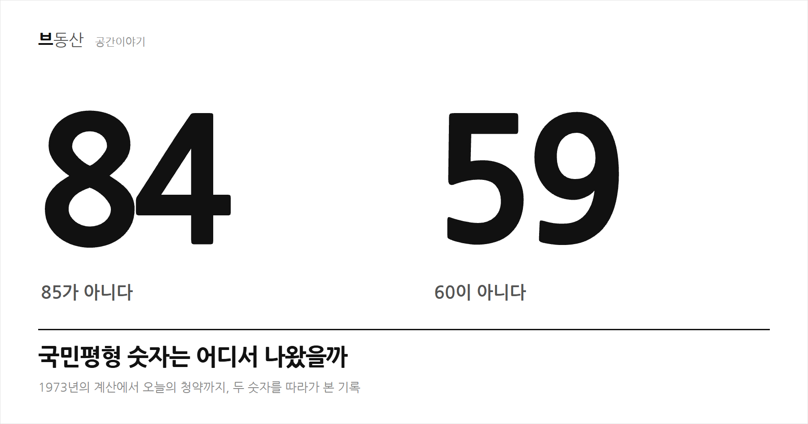
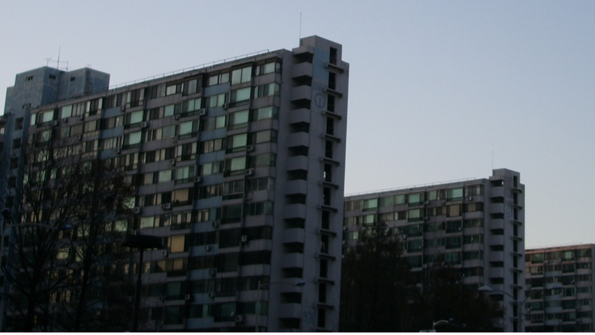
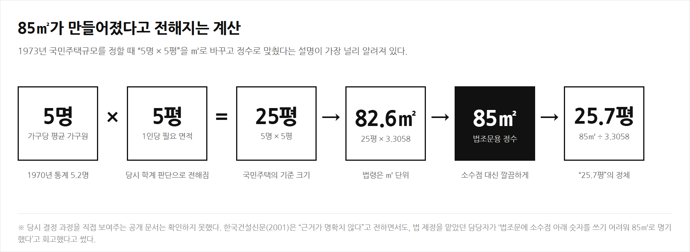
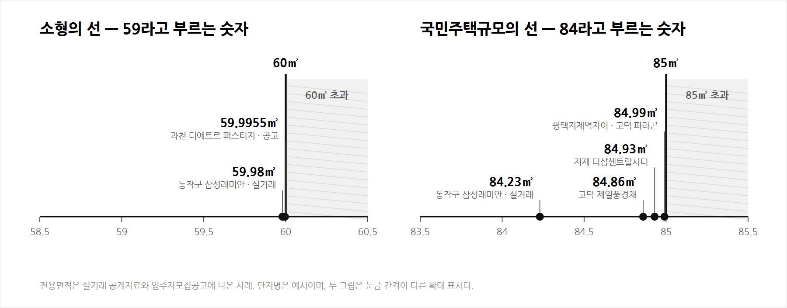
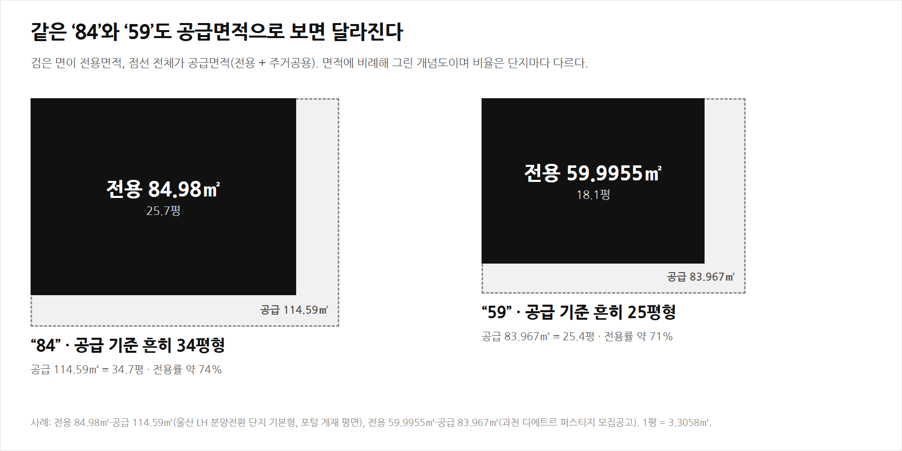
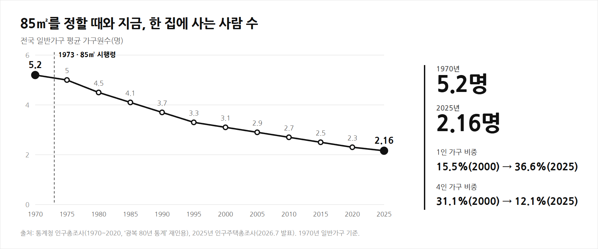
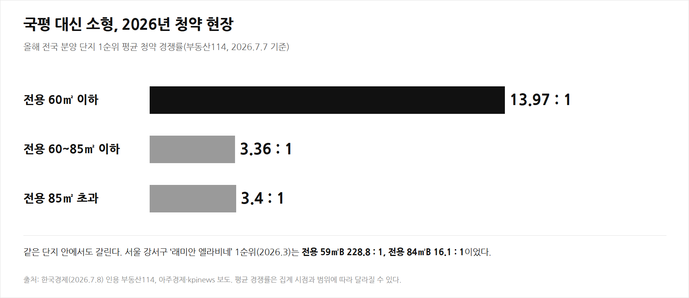
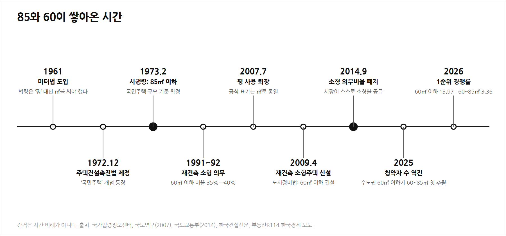

아파트 타입표에서 84.99는 봐도 85.01은 한 번도 못 봤다. 85도 아니고 왜 84일까, 59는 왜 60이 아닐까. 찾아보니 생각보다 사람 냄새 나는 이유였다.
1. 84는 법에 없는 숫자다 — 법에 있는 건 85
먼저 확인할 사실이 하나 있다. 법에 적힌 숫자는 84가 아니라 85다. 주택법 제2조 제6호는 국민주택규모를 “주거전용면적이 1호 또는 1세대당 85제곱미터 이하인 주택”으로 정의한다(수도권 밖 도시지역이 아닌 읍·면은 100㎡).
이 숫자의 뿌리는 1972년 12월 제정된 주택건설촉진법이다. 이 법이 ‘국민주택’이라는 개념을 처음 들여왔고, 이듬해인 1973년 2월 시행령이 그 크기를 85㎡ 이하로 못 박았다. 주택보급률이 70%대 중반에 머물던 시절, 무주택자에게 싼값에 공급할 집의 기준선이 필요했다.

자료: 중앙일보 「왜 꼭 ‘85’인가」 ↗ · 한국건설신문 「국민주택 규모 ‘25.7평’의 비밀」 ↗ · 비즈한국 「국민주택규모 50년」 ↗
2. 85는 어디서 나왔을까 — “5명 × 5평”이라는 설명
왜 하필 85일까. 가장 널리 알려진 설명은 가구 크기에서 출발한다. 통계청 조사에서 1970년 평균 가구원수는 5.2명이었다. 당시 학계가 1인당 적정 주거면적을 5평으로 보았고, 5명에 5평을 곱한 25평이 국민주택의 기준 크기가 됐다는 것이다.
문제는 단위였다. 우리나라는 1961년 미터법을 도입했고 법령에는 ‘평’을 쓸 수 없었다. 25평을 ㎡로 바꾸면 82.64㎡인데 법조문에 쓰기에는 소수점이 거슬렸다. 그래서 딱 떨어지는 85㎡로 올려 적었다. 이 85㎡를 다시 평으로 환산하면 25.7평이다. 국민주택규모를 오랫동안 “25.7평”이라 부른 이유가 여기에 있다.

이 설명을 어디까지 믿어야 할까
여기에는 단서가 붙는다. 한국건설신문은 2001년 해설에서 이 근거가 명확하지 않고 학계도 당시 건설부도 제대로 설명하지 못한다고 적었다. 같은 기사는 법 제정을 이끌었던 담당자가 “법조문에 소수점 아래 숫자를 쓰는 것이 어려워 85㎡를 명기했다”고 회고했다고 전한다. 방 3개와 거실·화장실을 합치면 85㎡쯤 된다는 다른 설도 있고, 비즈한국은 대통령 생가 규모에서 따왔다는 설이 자주 언급되지만 5명 × 5평 설명이 가장 설득력 있다고 정리했다.
그러니 “5명 × 5평”은 가장 설득력 있는 설명이지, 공문서로 확정된 사실은 아니다. 이 글에서는 그렇게 구분해서 적는다.
자료: 비즈한국 · 아시아경제 「대체 왜 85㎡야?」 ↗ · 양산신문 ↗ · 가구원수는 통계청 「광복 80년, 통계로 본 한국 사회의 변화상」 ↗
3. 크기 기준이 ‘선’이 됐다 — 85를 경계로 달라지는 것들
85㎡가 단순한 크기 기준이었다면 지금처럼 중요하지 않았을 것이다. 문제는 청약과 세제가 이 숫자를 경계선으로 가져다 썼다는 점이다. 85㎡ 한 칸을 넘으면 규칙이 달라진다.
| 항목 | 85㎡ 이하 | 85㎡ 초과 | 근거 |
|---|---|---|---|
| 청약통장 예치기준금액(서울·부산, 민영) | 300만원 | 102㎡ 이하 600만원, 135㎡ 이하 1,000만원 | 주택공급에 관한 규칙 별표 2 |
| 민영주택 1순위 당첨자 선정 | 가점제와 추첨제를 함께 적용 | 추첨제가 원칙 | 규칙 제28조 제2항·제4항 |
| 농어촌특별세(취득세 신고 시) | 비과세 | 과세 | 농어촌특별세법 시행령 제4조 |
| 분양가의 부가가치세 | 면세 | 과세(10%) | 한국경제 매거진 보도 |
| 신혼부부 특별공급 | 85㎡ 이하 민영주택 물량에서 배정 | 대상 아님 | 규칙 제41조 |
표를 보면 방향이 읽힌다. 85㎡ 이하는 혜택과 규제가 한 세트로 묶여 있고, 85㎡ 초과는 다른 시장이다. 가장 큰 집을 가장 유리한 조건에서 사려는 수요가 85㎡ 바로 아래에 몰리는 것은 자연스럽다.
자료: 주택공급에 관한 규칙 제28조 ↗ · 농어촌특별세 비과세 질의회신(서울세제-14624) ↗ · 한경매거진 「84제곱미터는 어떻게 국민평형이 됐나」 ↗ · 규칙 전문은 국가법령정보센터. 청약통장 예치금은 신청자 거주지역 기준이다.
4. 그래서 84.99다 — 선 아래 끝까지 채운다
기준이 ‘85㎡ 이하’이니 건설사는 85.00을 넘지 않는 선에서 가장 크게 짓는다. 한경매거진도 84㎡ 타입 대부분이 84.9㎡나 84.89㎡처럼 85㎡를 아슬아슬하게 넘지 않도록 설계된다고 짚었다. 실제 단지에서 나온 숫자는 이렇다.

85.01㎡짜리 아파트는 나오지 않는다. 소수점 아래를 버리고 ‘84’라고 부르는 것이 시장의 관행이다. 여기서 전용면적은 세대가 독점해서 쓰는 면적이다. 복도, 계단, 엘리베이터 홀처럼 두 세대 이상이 같이 쓰는 공용 부분은 국민주택규모를 따질 때 빠진다.
5. 59는 어디서 나왔을까 — 법에는 없는 숫자, 60㎡의 선
84가 85의 그림자라면 59는 60의 그림자다. 다만 60㎡는 85㎡처럼 ‘국민주택’이라는 하나의 이름으로 정의된 선이 아니다. 여러 제도가 각자 60㎡를 선으로 가져다 쓴 결과에 가깝다. 두 갈래가 있다.
첫째, 재건축의 소형주택 의무
정부는 1990년대부터 재건축 때 일정 비율을 작은 집으로 지으라고 요구했다. 국토연구원 논문(2007)이 정리한 연혁에서 60㎡ 이하 비율은 1991년 35%, 1992년 40%였다. 2009년 4월에는 도시정비법이 개정돼 용적률 완화분의 일정 비율을 60㎡ 이하 소형주택으로 짓게 하는 ‘재건축소형주택’이 생겼다. 서울과 경기는 조례로 60㎡ 이하를 20% 이상 짓게 했다. 이 의무는 2014년 9월 국무회의를 통과한 시행령 개정으로 폐지됐다. 시장이 스스로 소형을 충분히 공급한다는 이유였다.
한국경제는 59㎡가 청약제도가 아니라 이 소형주택 의무화 정책에서 비롯됐다고 설명한다. 2006년 발코니 확장이 합법화되고 1~2인 가구가 늘면서 59㎡가 선호를 얻었다는 해석도 붙였다.
둘째, 청약 규칙 속의 60㎡
청약 규칙에도 60㎡ 선이 있다. 제28조 제2항은 60㎡ 이하와 60㎡ 초과 85㎡ 이하를 나눠 가점제 비율을 다르게 정한다. 투기과열지구·청약과열지역 등에서는 60㎡ 이하가 40%, 60~85㎡ 이하가 70%다.
그 밖에도 60㎡는 곳곳에서 쓰인다. 생애최초 특별공급에서 단독세대주는 60㎡ 이하 주택만 신청할 수 있고(제43조), 60㎡ 이하이면서 공시가격 1억원(수도권 1억6천만원) 이하인 소형·저가주택 1채는 무주택으로 보는 규정도 있다(제53조). 내 해석을 덧붙이면, 59㎡는 이 중 어느 한 법이 ‘59’를 정해서 생긴 숫자가 아니라, 60㎡ 선을 공유하는 여러 제도 아래에서 건설사가 선 바로 아래를 채운 숫자다. 59.9955나 59.98이 그 증거다.
자료: 국토연구 54권(2007) 소형평형 의무비율 연구 ↗ · 국토교통부, 재건축 소형주택(60㎡ 이하) 의무공급비율 폐지(2014.9) ↗ · 한국경제 「아파트 인기 면적 59㎡와 84㎡는 어떻게 정해졌을까」 ↗ · 주택공급에 관한 규칙 제43조 ↗ · 제53조 ↗
6. 같은 84, 같은 59인데 “평수”가 달라 보이는 이유
평으로 말하면 헷갈림이 하나 더 있다. 85㎡를 25.7평이라고 할 때의 면적은 전용면적이다. 그런데 시장에서는 같은 집을 33평, 34평이라고 부른다. 공급면적(전용 + 주거공용)으로 말하기 때문이다.

국민주택 규모의 “25.7평”과 분양시장의 “34평형”은 같은 집을 가리키는 두 개의 자다. 반대로 시장에서 “25평형”이라 부르는 59㎡는 전용으로는 18평 남짓이다. 평수를 들을 때는 전용인지 공급인지 먼저 물어봐야 하는 이유다.
7. 5.2명이 2.16명이 되는 동안 — 국평의 주인공이 바뀌고 있다
85㎡는 5명 가족을 기준으로 잡은 크기였다. 지금은 어떨까. 2025년 인구주택총조사에서 평균 가구원수는 2.16명이다. 1인 가구가 36.6%로 가장 많고 4인 가구는 12.1%까지 줄었다. 법이 85㎡를 정할 때와는 전혀 다른 나라가 됐다.

시장은 이미 반응하고 있다. 부동산114에 따르면 올해 전국 분양 단지의 1순위 평균 경쟁률은 전용 60㎡ 이하가 13.97 대 1로, 60~85㎡의 3.36 대 1을 크게 앞섰다. 직방 자료로는 올해 상반기 서울 신규 분양에서 59㎡ 이하 비중이 48.6%, 84㎡는 22.5%였다. 같은 단지 안에서도 래미안 엘라비네의 경우 59㎡B는 228.8 대 1, 84㎡B는 16.1 대 1이었다.

가격에서도 역전이 나타난다. 서울 동작구 삼성래미안은 2026년 8월 전용 84.23㎡가 15억원에 거래된 다음 날, 같은 단지 전용 59.98㎡가 15억3천만원에 거래됐다. 분양가가 오른 영향이 크다. HUG에 따르면 최근 1년 전국 민간아파트 3.3㎡당 평균 분양가는 2,225만여원으로 1년 전보다 17.28% 올랐다. 총액 부담이 큰 상황에서 59㎡로 눈을 돌리는 수요가 늘었다.
다만 이 흐름이 곧바로 84의 퇴장을 뜻하지는 않는다. 85㎡ 선에 묶인 청약·세제 제도가 그대로이고, 전문가들도 당분간 84㎡의 대표성이 유지될 것으로 본다. 숫자의 출신은 50년 전인데, 시장의 선택은 올해의 가구 구성과 가격이 정한다.
자료: 통계청 2025년 인구주택총조사 결과 ↗ · 한국경제 「84㎡보단 59㎡…분양가 뛰자 소형에 청약 몰렸다」(2026.7.8) ↗ · kpinews 「서울 소형 아파트값 강세」(2026.9.29) ↗ · 아주경제 「84㎡ 대신 59㎡」(2026.4.23) ↗
정리 — 두 숫자의 정체

84는 1973년의 25평 계산이 남긴, 법의 선 아래 끝자리다. 법은 85㎡라고 썼고 시장은 선 아래를 가득 채운 84.9를 84라고 부른다. 59는 60㎡ 선을 공유한 여러 제도 아래에서 선 바로 밑을 채운 가장 큰 소형이다. 두 숫자 모두 건축적으로 가장 좋은 크기가 아니라, 제도가 그은 선과 그 선을 최대한 활용하려는 설계가 만난 지점에서 굳어졌다.
분양공고를 볼 때 써먹을 수 있는 확인 질문
- 같은 84라도 전용면적이 84.99인지 84.5인지, 타입(84A·84B 등)별 구조가 어떻게 다른지 확인했는가.
- 60㎡ 바로 아래 타입(59.9㎡대)은 60㎡ 이하 구간의 청약·자격 규정을 따른다는 점을 알고 있는가.
- 85㎡를 넘는 타입(예: 92㎡, 93㎡)은 청약통장 예치금과 당첨자 선정 방식이 다르다는 점을 확인했는가.
- 평수를 말한 사람이 전용 기준인지 공급 기준인지 확인했는가.
두 숫자의 출처를 추적하며 느낀 점이 하나 있다. 우리가 매일 쓰는 숫자가 어느 한 사람의 취향이나 건축적 판단이 아니라 법의 단위 환산과 제도 경계가 만든 흔적이라는 것이다. 다음 공간이야기에서는 이 숫자 안쪽, 84㎡와 59㎡ 평면이 실제로 어떻게 설계되는지 들여다본다.